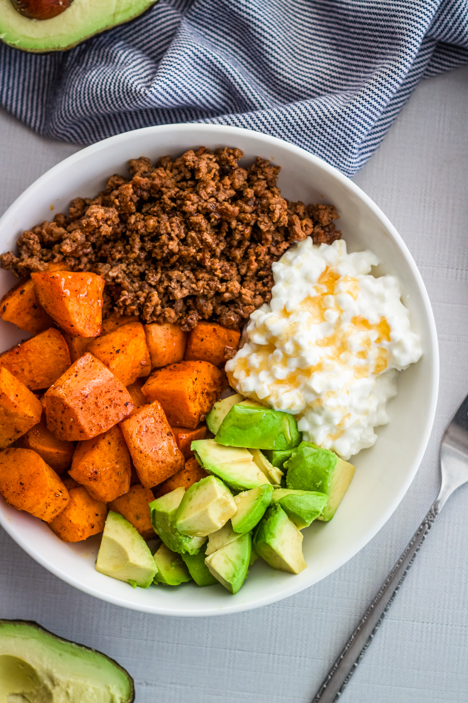
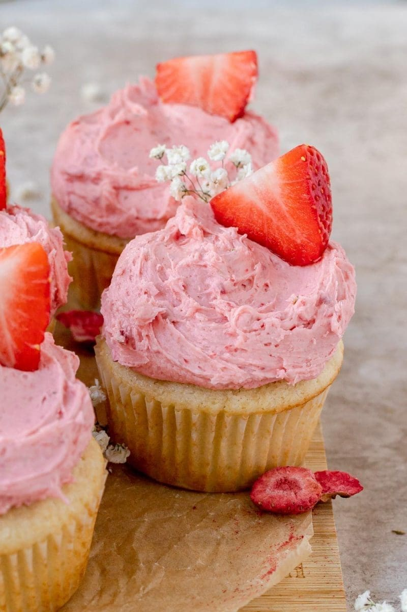
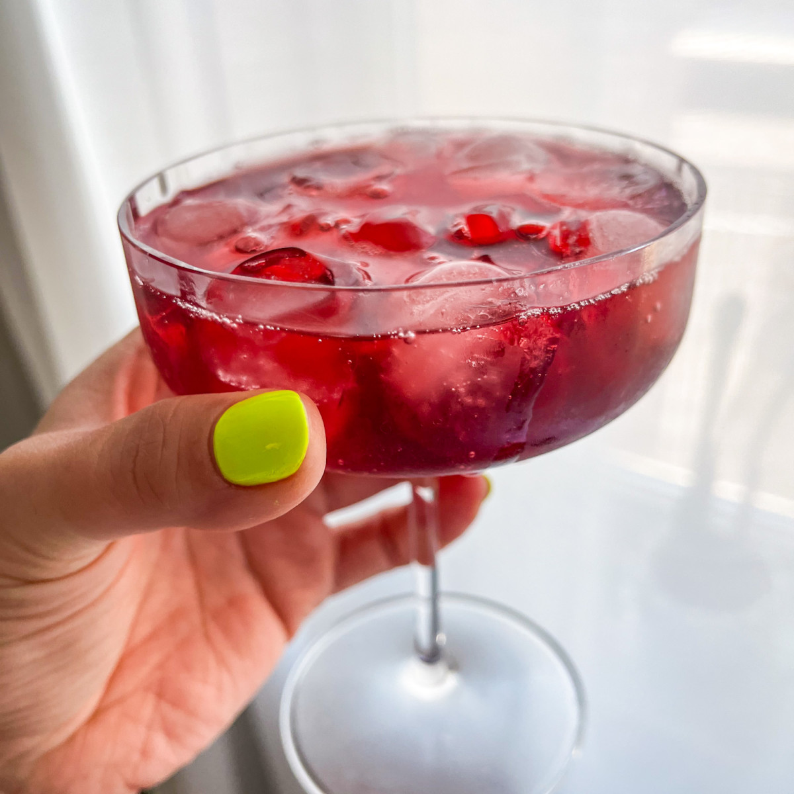

DINNER
Creamy Chicken Cutlets + Tomato Basil Bucatini
Crispy, cozy, and easy enough for a weeknight when you still want something that feels a little elevated.
WELCOME TO MY KITCHEN
Welcome! I created this site to share the meals, baking projects, drinks, and little food moments I’ve been learning along the way, including recipes that feel realistic, fun, and actually worth making again.
cute food, real life, zero perfection
Browse Dinners


Cooking Through College is a space where I share meals, desserts, and drinks that feel realistic for everyday life. I wanted this site to feel fun and personal instead of overly serious or complicated. A lot of the recipes I make are simple enough for a busy school week, but still feel a little special. Some are dinners I actually come back to, while others are baking ideas or drinks I’ve made for friends. My goal is to show that cooking in college does not have to be perfect to be enjoyable. It can be casual, creative, and something that fits naturally into real life.
This site is meant for anyone who wants approachable food ideas without needing a huge budget or a ton of experience. I focus on recipes that are easy to remake, fun to share, and worth keeping in your rotation. Whether I am making a quick dinner, trying a dessert for a birthday, or putting together a fun drink, I like recipes that feel exciting but still manageable. I also wanted the site to reflect my own style, which is a little girly, a little cozy, and very food-focused. Visitors should be able to click around, get ideas, and understand exactly what this site is about. At the end of the day, it is really just about making food that feels fun and doable.
WEEKNIGHT FAVORITE
SOMETHING SWEET
WEEKEND VIBES
HOSTING ENERGY
FEATURED RIGHT NOW
A few favorites...
DINNER
Crispy, cozy, and easy enough for a weeknight when you still want something that feels a little elevated.
BAKING
I made these for my friend’s 21st birthday when I was tight on gift ideas, and they turned out so fun. It’s an easy way to dress up a simple yellow cake box mix and make it feel a little more special.
DRINKS
A simple drink I like to make before winding down for bed. It feels cozy and calming, but still a little fun and elevated compared to just having water or tea.
THIS WEEK
A simple weekly plan with dinners, lunches, and a little baking mixed in.
| Day | Meal | Category | Protein |
|---|---|---|---|
| Monday | Creamy chicken cutlets + tomato basil bucatini | Dinner | Chicken |
| Tuesday | Greek chicken bowls | Dinner | Chicken |
| Wednesday | Turkey taco lettuce wraps | Lunch | Ground turkey |
| Thursday | Salmon with roasted vegetables | Dinner | Salmon |
| Friday | Brown butter blondies | Baking | N/A |